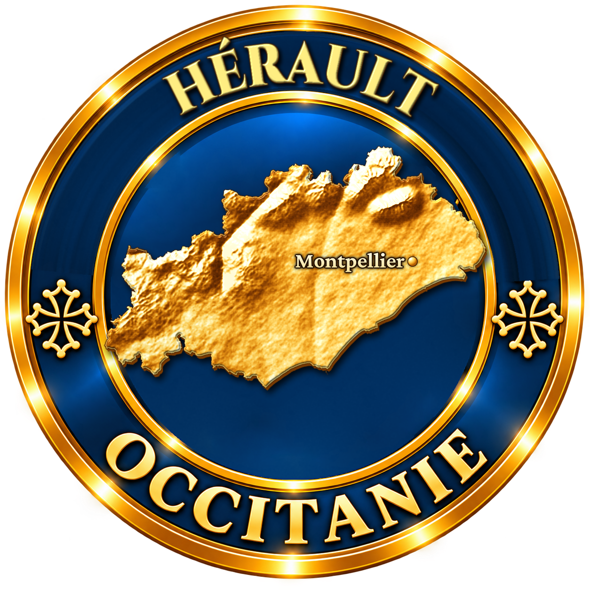
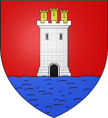
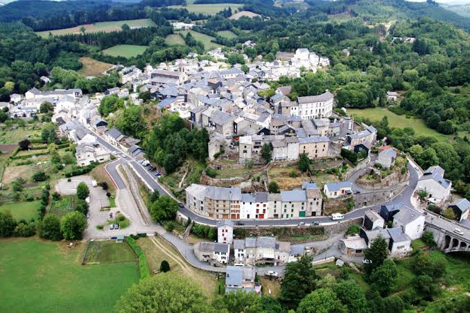

Aux confins de l'Hérault, du Tarn et de l'Aveyron, au cœur du Parc naturel régional du Haut-Languedoc, La Salvetat-sur-Agout doit ses origines à un monastère bénédictin établi vers l'an 800, au confluent de la Vèbre et de l'Agout, dont la chapelle romane Saint-Étienne de Cavall reste aujourd'hui l'unique témoin. Craignant les pillages de l'époque, les habitants se réfugient au XIIe siècle sur un éperon rocheux dominant un méandre de l'Agout, où s'élève alors un château autour duquel se love le village actuel.

Théâtre de nombreuses guerres de voisinage, la cité fortifiée fait le choix rare, au XIIe siècle, de démolir ses propres remparts à la demande du peuple et du clergé : le village devient une « sauveté », terre de refuge ouverte plutôt que forteresse fermée, un statut qui lui donne son nom. Rattaché à l'évêché de Saint-Pons-de-Thomières, il traverse les guerres de Religion sans jamais être pris par les Protestants, puis connaît une grande prospérité au XVIIIe et au XIXe siècle, devenant chef-lieu de canton et comptant alors près de 5 000 habitants.
L'exode rural de l'après-guerre vide peu à peu le village, avant qu'un nouvel élan économique ne naisse dans les années 1950 avec la mise en eau du lac de la Raviège en 1957 et l'essor de l'eau minérale de La Salvetat, embouteillée non loin de là aux sources de Rieumajou.
Aujourd'hui, La Salvetat-sur-Agout, avec ses toits bleutés d'ardoise, vit de l'agriculture, de sa fameuse eau pétillante et d'un tourisme vert qui attire randonneurs, pèlerins de Compostelle et amateurs de lacs.
C'est aux sources de Rieumajou, à l'écart du village, que jaillit l'eau ferrugineuse qui a bâti la réputation de La Salvetat bien avant les publicités et les rayons de supermarché : embouteillée à la main autrefois, servie dans un hôtel thermal aujourd'hui englouti sous le lac de la Raviège, elle est désormais une eau minérale naturelle de renommée nationale.
La vie a été mouvementée dans La Salvetat sur Agoût entre l'An Mille et les temps actuels : il a fallu que le village se perche sur un promontoire pour résister aux assauts des seigneurs voisins.
— d'après Montagne Haut-Languedoc, portrait du villageLe lac de la Raviège, mis en eau en 1957 pour la production hydro-électrique, a donné naissance à toute une culture nautique : ski nautique, voile, canoë et pêche y cohabitent avec les mouflons et l'aigle royal des montagnes environnantes. Côté gourmandise, la charcuterie de montagne, le fromage de chèvre, le miel, les cèpes et surtout le « matefaim », entre crêpe et beignet aux pommes, régalent les visiteurs toute l'année.
Lacaune-les-Bains ancienne cité thermale du Tarn voisin, réputée pour son jambon et sa statue-menhir géante, la Peyro Levado.
Fraisse-sur-Agout village voisin du Parc naturel régional du Haut-Languedoc, apprécié pour son église romane et son château du XVIIe siècle.
Lac du Laouzas autre plan d'eau du plateau des lacs, avec la plage labellisée Pavillon Bleu de Rieumontagné.
Olargues l'un des Plus Beaux Villages de France, à moins d'une heure de route, avec son pont du Diable et ses ruelles caladées.